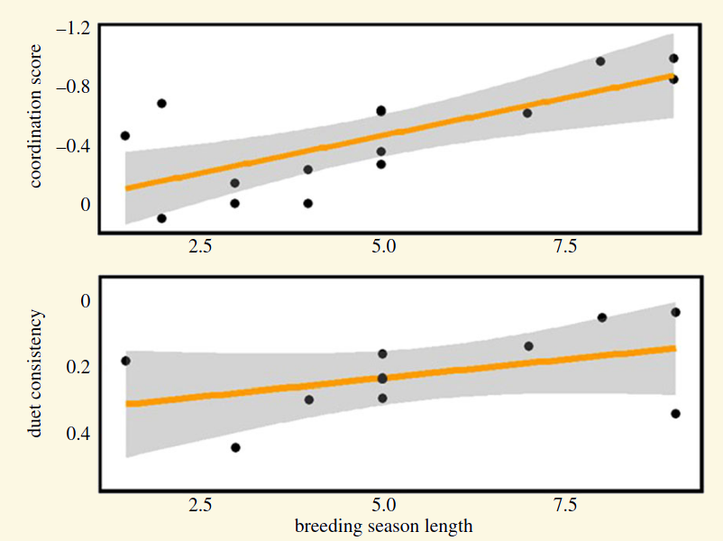
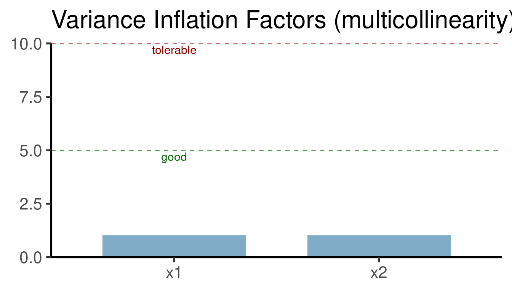
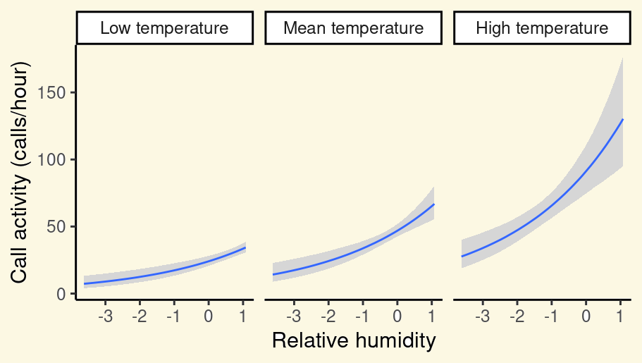
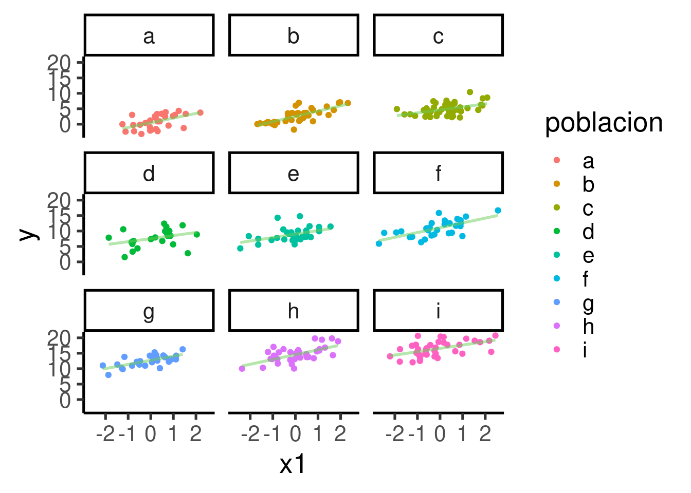

Modelos de regresión
Programación y métodos estadísticos avanzados en R
Marcelo
Araya-Salas, PhD
“2022-10-24”
Modelos lineales como marco unificador
Tradicionalmente, los modelos estadísticos se han enseñado como herramientas desconectadas sin una relación clara entre ellas. Sólo hace falta darle un vistazo a un libro clásico de estadística para biólogos (Sokal & Rolhf):

Sin embargo, la mayoría de esos modelos estadísticos comunes no son más que casos especiales de modelos lineales. Por lo tanto, aprenderlos como tales puede simplificar mucho las cosas. Este enfoque tiene varias ventajas:
En primer lugar, todo se reduce a y=a⋅x+b, lo que simplifica en gran medida el aprendizaje
Esto también significa que no hay necesidad de aprender sobre los parámetros, las hipótesis y la interpretación de los resultados para cada caso especial.
Los modelos lineales se han ampliado para tener en cuenta distribuciones y estructuras de datos complejas (por ejemplo, modelos mixtos, modelos lineales generalizados, modelos cero-inflados, etc.) proporcionando una plataforma más flexible.
Los modelos lineales se aplican en todos los paradigmas estadísticos (por ejemplo, frecuentista, bayesiano)
Objetivo del manual
- Comprender la inferencia estadística a través de una única herramienta de modelaje (modelos lineales en sentido amplio)
Familiarizarse con la construcción de modelos lineales
Extender los modelos lineales a diferentes estructuras de datos
Paquetes a utilizar en este manual:
# vector con paquetes
ptqs <- c("ggplot2", "viridis", "lmerTest", "sjPlot")
# bucle para instalar/cargar paquetes
instalado <- sapply(ptqs, function(y) {
ptq <- strsplit(y, "/")[[1]]
ptq <- ptq[length(ptq)]
if (!ptq %in% installed.packages()[, "Package"]) {
if (grepl("/", y))
remotes::install_github(y, force = TRUE) else install.packages(y)
}
try(require(ptq, character.only = TRUE), silent = TRUE)
})
Cómo simular datos
Generación de números aleatorios en R
La estadística nos permite inferir patrones en los datos. Solemos utilizar conjuntos de datos reales para enseñar estadística. Sin embargo, puede ser circular entender el funcionamiento interno de una herramienta estadística probando su capacidad para inferir un patrón que no estamos seguros de encontrar en los datos (y no tenemos idea del mecanismo que produjo ese patrón). Las simulaciones nos permiten crear escenarios controlados en los que conocemos con seguridad los patrones presentes en los datos y los procesos subyacentes que los han generado.
R ofrece algunas funciones básicas para la simulación de datos. Las
más utilizadas son las funciones generadoras de números aleatorios. Los
nombres de estas funciones comienzan con r
(r____()). Por ejemplo, runif():
El resultado es un vector numérico de longitud 100
(n = 100):
## [1] 9.8891 3.9775 1.1570 0.6975 2.4375 7.9201 3.4006 9.7206 1.6586 4.5910 1.7175
## [12] 2.3148 7.7281 0.9630 4.5345 0.8470 5.6067 0.0870 9.8574 3.1658 6.3945 2.9522
## [23] 9.9670 9.0602 9.8874 0.6565 6.2704 4.9048 9.7102 3.6222 6.7999 2.6372 1.8571
## [34] 1.8514 3.7930 8.4702 4.9808 7.9059 8.3846 4.5690 7.9948 3.8194 7.5970 4.3678
## [45] 9.0422 3.1953 0.8257 8.1629 8.9848 9.6650 5.7307 7.2008 7.7406 6.2776 7.2299
## [56] 3.8683 1.6279 1.8723 3.9125 2.7390 1.9192 5.0439 7.6384 6.9367 5.4405 6.5909
## [67] 4.6873 4.8181 3.3706 4.2453 2.8702 6.0119 8.4074 6.2084 1.3455 5.6772 4.4343
## [78] 4.3798 6.2362 9.3265 8.8849 8.7854 2.4218 7.4145 3.8766 0.7895 0.9484 7.6214
## [89] 3.4789 4.1677 3.4402 0.0841 9.1157 1.8221 7.2280 5.7196 5.4004 3.5495 8.2409
## [100] 1.8614
Podemos explorar el resultado graficando un histograma:
# crear histograma
ggplot(data = data.frame(unif_var), mapping = aes(x = unif_var)) +
geom_histogram()
Muestra una distribución uniforme que va de 0 a 10.
También podemos simular números aleatorios procedentes de una
distribución normal utilizando rnorm():
# crear una variable normal
norm_var <- rnorm(n = 1000, mean = 2, sd = 1)
# graficar histograma
ggplot(data = data.frame(norm_var), mapping = aes(x = norm_var)) +
geom_histogram()
Tenga en cuenta que todas las funciones generadoras de números aleatorios tienen el argumento ‘n’, que determina la longitud del vector generado (es decir, el número de números aleatorios), además de algunos argumentos adicionales relacionados con parámetros específicos de la distribución.
Las variables continuas (es decir, los vectores numéricos) pueden convertirse en variables discretas (es decir, números enteros) simplemente redondeándolas:
## [1] 15.43 8.54 15.14 8.92 9.37## [1] 15 9 15 9 9
Ejercicio 1
¿Qué hacen las funciones
rbinom()yrexp()?Ejecutela y haga histogramas de sus resultados
¿Qué hacen los argumentos ‘mean’ y ‘sd’ en
rnorm()? Juege con diferentes valores y comprueba el histograma para hacerse una idea de su efecto en la simulación
Generación de variables categóricas
La forma más sencilla de generar variables categóricas es utilizar el
vector de ejemplo letters' (oLETTERS’) para asignar niveles
de categoría. Podemos hacerlo utilizando la función rep().
Por ejemplo, el siguiente código crea un vector categórico (caracteres)
con dos niveles, cada uno con 4 observaciones:
## [1] "a" "a" "a" "a" "b" "b" "b" "b"
También podemos replicar este patrón utilizando el argumento ‘times’. Este código replica el vector anterior 2 veces:
## [1] "a" "a" "a" "a" "b" "b" "b" "b" "a" "a" "a" "a" "b" "b" "b" "b"
Otra opción es simular una variable a partir de una distribución binomial y luego convertirla en un factor:
## [1] 1 0 0 1 1 0 0 0 0 0 0 0 1 1 1 0 0 1 0 1 0 0 0 0 0 0 0 1 0 1 1 1 0 0 0 1 0 0 1 1 0
## [42] 0 0 0 0 1 0 1 1 1## [1] b a a b b a a a a a a a b b b a a b a b a a a a a a a b a b b b a a a b a a b b a
## [42] a a a a b a b b b
## Levels: a b
Muestreo aleatorio
La otra herramienta importante de R para jugar con datos simulados es
sample(). Esta función permite tomar muestras de tamaños
específicos de vectores. Por ejemplo, tomemos el ejemplo del vector
‘letters’:
## [1] "a" "b" "c" "d" "e" "f" "g" "h" "i" "j" "k" "l" "m" "n" "o" "p" "q" "r" "s" "t"
## [21] "u" "v" "w" "x" "y" "z"
Podemos tomar una muestra de este vector como es:
## [1] "i" "r" "q" "a" "c" "m" "y" "z" "u" "v"
El argumento ‘size’ nos permite determinar el tamaño de la muestra. Tenga en cuenta que obtendremos un error si el tamaño es mayor que el propio vector:
## Error in sample.int(length(x), size, replace, prob): impossível tomar uma amostra maior que a população quando 'replace = FALSE'
Esto sólo puede hacerse cuando el muestreo es con reemplazo
(replacement). El muestreo con reemplazo puede aplicarse estableciendo
el argumento replace = TRUE:
## [1] "j" "i" "h" "i" "k" "u" "n" "i" "w" "k" "c" "t" "m" "p" "i" "h" "d" "w" "c" "q"
## [21] "j" "e" "e" "j" "k" "c" "l" "t" "r" "h"
Iterar un proceso
A menudo, las simulaciones deben repetirse varias veces para
descartar resultados espurios debidos al azar o simplemente para probar
diferentes parámetros. Las funciones de simulación de datos mencionadas
anteriormente pueden ejecutarse varias veces (por ejemplo, iteradas)
utilizando la función replicate():
# replicar
repl_rnorm <- replicate(n = 3, expr = rnorm(2), simplify = FALSE)
# ver clase
class(repl_rnorm)## [1] "list"## [[1]]
## [1] 1.19 -0.34
##
## [[2]]
## [1] 0.789 -0.632
##
## [[3]]
## [1] -1.493 -0.134
Hacer que las simulaciones sean reproducibles
El último truco que necesitamos para ejecutar simulaciones en R es la
capacidad de reproducir una simulación (es decir, obtener exactamente
los mismos datos y resultados simulados). Esto puede ser útil para que
otros investigadores puedan ejecutar nuestros análisis exactamente de la
misma manera. Esto puede hacerse fácilmente con la función
set.seed(). Pruebe a ejecutar el siguiente código. Debería
obtener la misma salida:
## [1] 0.507 0.307Crear juegos de datos
Juegos de datos con variables numéricas y categóricas
Ahora que sabemos cómo simular variables continuas y categóricas.
Podemos juntarlas para crear conjuntos de datos simulados. Esto se puede
hacer utilizando la función data.frame():
# crear variable categorica
grupo <- rep(letters[1:2], each = 3)
# crear variable continuaa
size <- rnorm(n = 6, mean = 5, sd = 1)
# poner juntas en un data frame
df <- data.frame(grupo, size)
# imprimir
df| grupo | size |
|---|---|
| a | 4.82 |
| a | 3.63 |
| a | 4.40 |
| b | 5.29 |
| b | 5.39 |
| b | 3.79 |
Por supuesto, podríamos añadir más variables a este cuadro de datos:
# crear variable categorica
grupo <- rep(letters[1:2], each = 3)
individuo <- rep(LETTERS[1:6])
# crear variables continuas
size <- rnorm(n = 6, mean = 5, sd = 1)
weight <- rnorm(n = 6, mean = 100, sd = 10)
# poner todo en un data frame
df <- data.frame(grupo, individuo, size, weight)
# imprimir
df| grupo | individuo | size | weight |
|---|---|---|---|
| a | A | 4.64 | 109.9 |
| a | B | 3.37 | 107.4 |
| a | C | 4.74 | 100.9 |
| b | D | 6.10 | 90.5 |
| b | E | 5.76 | 98.0 |
| b | F | 4.76 | 109.3 |
Y eso es un juego de datos simulados en su forma más básica. Se parece mucho al tipo de datos con los que trabajamos en biología.
Cómo utilizar datos simulados para entender el comportamiento de las herramientas estadísticas
Prueba de concepto: el Teorema Central del Límite
El Teorema del Límite Central afirma que, si tomamos muestras aleatorias de una población, los promedios de esas muestras seguirán una distribución normal, aunque la población no esté distribuida normalmente. Además, la distribución normal resultante debe tener un promedio cercano al promedio de la población. El teorema es un concepto clave para la estadística inferencial, ya que implica que los métodos estadísticos que funcionan para las distribuciones normales pueden ser aplicables a muchos problemas que implican otros tipos de distribuciones. No obstante, el objetivo aquí es sólo mostrar cómo se pueden utilizar las simulaciones para entender el comportamiento de los métodos estadísticos.
Para comprobar si esas afirmaciones básicas sobre el Teorema del Límite Central son ciertas, podemos utilizar datos simulados en R. Vamos a simular una población de 1000 observaciones con una distribución uniforme:
# simular popublacion uniforme
unif_pop <- runif(1000, min = 0, max = 10)
# ver histograma
ggplot(data = data.frame(unif_pop), mapping = aes(x = unif_pop)) +
geom_histogram()
Podemos tomar muestras aleatorias usando sample()
así:
## [1] 9.284 1.026 2.575 3.325 6.900 2.294 0.337 8.214 3.304 8.038 2.592 7.818 5.654
## [14] 0.638 2.835 4.204 4.763 4.422 6.978 7.926 0.681 3.523 6.511 5.383 7.972 1.801
## [27] 4.213 3.339 8.912 4.712
Este proceso puede ser replicado varias veces con
replicate():
El código anterior toma 100 muestras con 30 valores cada una. Ahora podemos comprobar la distribución de las muestras:
# ver distribucion/ histograma
ggplot(data = data.frame(samples), mapping = aes(x = samples)) + geom_histogram()
… asi como el promedio:
## [1] 5.02
Como era de esperar, las muestras siguen una distribución normal con una media cercana a la media de la población, que es:
## [1] 5.05
Probemos con una distribución más compleja. Por ejemplo, una distribución bimodal:
# usar semilla
set.seed(123)
# simular variables
norm1 <- rnorm(n = 1000, mean = 10, sd = 3)
norm2 <- rnorm(n = 1000, mean = 20, sd = 3)
# juntar en una sola variable
bimod_pop <- c(norm1, norm2)
# ver histograma
ggplot(data = data.frame(bimod_pop), mapping = aes(x = bimod_pop)) +
geom_histogram()
# replicar muestreo
samples <- replicate(200, mean(sample(bimod_pop, 10)))
# ver histograma
ggplot(data = data.frame(samples), mapping = aes(x = samples)) + geom_histogram()
## [1] 15.2## [1] 15.1
Ejercicio 2
Intenta explorar el Teorema del Límite Central como en el caso anterior, pero esta vez utilizando:
- Una distribución exponencial (
rexp()) - Una distribución binomial (
rbinom())
- Una distribución exponencial (
- Para cada distribución: grafique un histograma y compare los promedios de la población y de las muestras
Las regresiones lineales se basan en la ecuación lineal a = mx + b que aprendimos en el colegio. La representación formal tiene este aspecto:
\(\hat{Y}\): variable respuesta
\(\beta_{o}\): intercepto
\(\beta_{1}\): estimado de la magnitud del efecto de \(x_{1}\) en \(\hat{Y}\) (también conocido como tamaño de efecto, coeficiente o simplemente “estimado”)
\(x_{1}\): variable predictora
El objetivo más común de una regresión lineal es la estimación de los valores de \(\beta_{*}\). Esto se consigue encontrando la línea recta que mejor se ajusta y que representa la asociación entre un predictor y la respuesta:

Estos \(\beta_{*}\) son el tamaño de efecto estimado del predictor correspondiente (por ejemplo, \(\beta_{1}\) es el tamaño de efecto \(x_{1}\)). Su valor representa el cambio medio en \(\hat{Y}\) (en unidades \(\hat{Y}\)) para una unidad de cambio en \(\beta_{*}\). Por lo tanto, la hipótesis nula es que esos \(\beta_{*}\) no son diferentes de 0:
lo que equivale a esto:
Por ejemplo, un modelo de regresión con este resultado:

Regresión lineal en R
Para sacar el máximo provecho de los modelos lineales necesitamos
sentirnos cómodos con ellos. Empezaremos explorando la función de
regresión lineal de R lm(). En R la mayoría de los modelos
lineales y sus extensiones comparten formatos comunes de entrada de
datos y resultados, lo que facilita su aplicación una vez que entendemos
sus fundamentos.
Utilizaremos el juego de datos ‘trees’ que viene por defecto con R. ‘trees’ proporciona medidas del diámetro (etiquetado como ‘Girth’), altura y volumen de 31 cerezos talados:
| Girth | Height | Volume |
|---|---|---|
| 8.3 | 70 | 10.3 |
| 8.6 | 65 | 10.3 |
| 8.8 | 63 | 10.2 |
| 10.5 | 72 | 16.4 |
| 10.7 | 81 | 18.8 |
| 10.8 | 83 | 19.7 |
La función básica de R para construir un modelo lineal es
lm(). Veamos los componentes básicos de un modelo de
regresión utilizando lm():

Podemos correr este modelo para ver el resultado:
##
## Call:
## lm(formula = Height ~ Girth, data = trees)
##
## Residuals:
## Min 1Q Median 3Q Max
## -12.582 -2.769 0.316 2.473 9.946
##
## Coefficients:
## Estimate Std. Error t value Pr(>|t|)
## (Intercept) 62.031 4.383 14.15 1.5e-14 ***
## Girth 1.054 0.322 3.27 0.0028 **
## ---
## Signif. codes: 0 '***' 0.001 '**' 0.01 '*' 0.05 '.' 0.1 ' ' 1
##
## Residual standard error: 5.54 on 29 degrees of freedom
## Multiple R-squared: 0.27, Adjusted R-squared: 0.244
## F-statistic: 10.7 on 1 and 29 DF, p-value: 0.00276
Esto es lo que significan los elementos de la salida:
Llamada (call): la función y los parámetros que se utilizaron para crear el modelo
Residuales (residuals): distribución de los residuales. Los residuales son la diferencia entre lo que predijo el modelo y el valor real de y. Esta es una representación gráfica de los residuales:
Coeficientes (coefficients): contiene los tamaños de efecto (‘Estimates’), una medida de su incertidumbre (‘Standar error’), la estadística asociada (‘t value’) y el valor p (‘Pr(>|t|)’). Los tamaño de efecto o estimados se dan como el cambio promedio en y por cada aumento de 1 unidad en x. Para este ejemplo el estimado es de 1,0544 \(in / in\). A pesar de que las unidades se anulan (`1,0544 \(in / in\) = 1,0544) tenerlas en cuenta sigue siendo biológicamente significativo. Significan que, en promedio, y un aumento de 1 pulgada en la circunferencia que se espera un aumento de 1,0544 pulgadas en la altura.
Error estándar de los residuales (residual standard error): se explica por sí mismo. El error estándar de los residuales
R-cuadrado múltiple (multiple R-squared): el coeficiente de determinación, que pretende ser una medida de lo bien que su modelo se ajusta a los datos
R-cuadrado ajustado (adjusted R-squared): similar al ‘R-cuadrado múltiple’ pero penalizado por el número de parámetros
Estadístico F (F-statistic): estadístico para una prueba global que comprueba si al menos uno de sus coeficientes es distinto de cero
Valor de p: probabilidad de una prueba global que comprueba si al menos uno de sus coeficientes es distinto de cero
Utilizaremos lm() para mostrar la flexibilidad de los
modelos de regresión. Los componentes de regresión se añadirán
gradualmente para que podamos tomarnos el tiempo de entender cada uno de
ellos así como los correspondientes cambios en la salida de la
regresión.
Modelo solo con intercepto
Primero vamos a crear una variable numérica de respuesta:
# definir semilla
set.seed(123)
# numero de observaciones
n <- 50
# variables aleatorias
y <- rnorm(n = n, mean = 0, sd = 1)
# put it in a data frame
y_data <- data.frame(y)
Esta única variable puede introducirse en un modelo de
regresión sólo con intercepto. Para ello, debemos suministrar
la fórmula del modelo y los datos a lm():
Lo que equivale a:
Podemos obtener el resumen por defecto de los resultados del modelo
ejecutando summary() en el objeto de salida ‘y_mod’:
##
## Call:
## lm(formula = y ~ 1, data = y_data)
##
## Residuals:
## Min 1Q Median 3Q Max
## -2.001 -0.594 -0.107 0.664 2.135
##
## Coefficients:
## Estimate Std. Error t value Pr(>|t|)
## (Intercept) 0.0344 0.1309 0.26 0.79
##
## Residual standard error: 0.926 on 49 degrees of freedom
Puede ser bastante informativo graficar los tamaños de efecto (aunque en este caso sólo tenemos uno):
ci_df <- data.frame(param = names(y_mod$coefficients), est = y_mod$coefficients,
confint(y_mod))
ggplot(ci_df, aes(x = param, y = est)) + geom_hline(yintercept = 0,
color = "red", lty = 2) + geom_pointrange(aes(ymin = X2.5.., ymax = X97.5..)) +
labs(x = "Parámetro", y = "Tamaño de efecto") + coord_flip()
Para evaluar la importancia de la asociación nos centramos en la tabla de coeficientes:
## Estimate Std. Error t value Pr(>|t|)
## (Intercept) 0.0344 0.131 0.263 0.794En este ejemplo no hay predictores en el modelo, por lo que sólo tenemos una estimación para el intercepto (\(\beta_0\))
El modelo nos dice que el intercepto se estima en 0.034 y que este valor no es significativamente diferente de 0 (valor p = 0.794)
En este caso el intercepto es simplemente la media de la variable de respuesta
## [1] 0.0344
- Rara vez tenemos predicciones sobre el intercepto, por lo que tendemos a ignorar esta estimación.
- Ruhs, E. C., Martin, L. B., & Downs, C. J. (2020). The impacts of body mass on immune cell concentrations in birds. Proceedings of the Royal Society B, 287(1934), 20200655.
“Encontramos que un modelo sólo con intercepto (intercept-only model) explicaba mejor las concentraciones de linfocitos y eosinófilos en las aves, indicando que las concentraciones de estos tipos de células eran independientes de la masa corporal.”

Ejercicio 3
Cambie el argumento ‘mean’ en la llamada de la función “rnorm()` (línea 130) por un valor distinto de 0 y observe cómo cambian los valores en la tabla de coeficientes
Cambia el argumento
sden la llamada a la funciónrnorm()(línea 130) por un valor más alto y observe cómo cambian los valores en la tabla de coeficientes
Añadir un predictor no asociado
Podemos crear 2 variables numéricas no relacionadas así:
# definir semilla
set.seed(123)
# numero de observaciones
n <- 50
# variables aleatorias
y <- rnorm(n = n, mean = 0, sd = 1)
x1 <- rnorm(n = n, mean = 0, sd = 1)
# crear data frame
xy_datos <- data.frame(x1, y)
Estas dos variables pueden introducirse en un modelo de regresión para evaluar la asociación entre ellas:
# construir model
xy_mod <- lm(formula = y ~ x1, data = xy_datos)
# graficar
ggplot(xy_datos, aes(x = x1, y = y)) + geom_smooth(method = "lm",
se = FALSE) + geom_point() # graficar points
Que es equivalente a esto:
Imprimamos el resumen de este modelo:
##
## Call:
## lm(formula = y ~ x1, data = xy_datos)
##
## Residuals:
## Min 1Q Median 3Q Max
## -2.004 -0.624 -0.123 0.687 2.106
##
## Coefficients:
## Estimate Std. Error t value Pr(>|t|)
## (Intercept) 0.0398 0.1340 0.30 0.77
## x1 -0.0367 0.1475 -0.25 0.80
##
## Residual standard error: 0.935 on 48 degrees of freedom
## Multiple R-squared: 0.00129, Adjusted R-squared: -0.0195
## F-statistic: 0.0618 on 1 and 48 DF, p-value: 0.805
… y graficar los tamaños de efecto:
ci_df <- data.frame(param = names(xy_mod$coefficients), est = xy_mod$coefficients,
confint(xy_mod))
ggplot(ci_df, aes(x = param, y = est)) + geom_hline(yintercept = 0,
color = "red", lty = 2) + geom_pointrange(aes(ymin = X2.5.., ymax = X97.5..)) +
labs(x = "Parámetro", y = "Tamaño de efecto") + coord_flip()
Deberíamos “diagnosticar” la idoneidad del modelo inspeccionando más
de cerca la distribución de los residuales. La función
plot_model() del paquete sjPlot hace un buen
trabajo para crear gráficos de diagnóstico para modelos lineales:
## [[1]]
##
## [[2]]
##
## [[3]]
Cuadro con coeficientes:
## Estimate Std. Error t value Pr(>|t|)
## (Intercept) 0.0398 0.134 0.297 0.768
## x1 -0.0367 0.147 -0.249 0.805
En este ejemplo hemos añadido un predictor al modelo, por lo que hemos obtenido una estimado adicional (y una fila extra, ‘x1’)
El modelo nos dice que la estimación de ‘x1’ es -0.037 y que no es significativamente diferente de 0 (p = 0.805)
Simular un predictor asociado
Podemos utilizar la fórmula del modelo lineal anterior para simular dos variables continuas asociadas así:
# definir semilla
set.seed(123)
# numero de observaciones
n <- 50
b0 <- -4
b1 <- 3
error <- rnorm(n = n, sd = 3)
# variables aleatorias
x1 <- rnorm(n = n, mean = 0, sd = 1)
y <- b0 + b1 * x1 + error
# crear data frame
xy_datos2 <- data.frame(x1, y)
Note que también hemos añadido un término de error, por lo que la asociación no es perfecta. Vamos a correr el modelo y graficar la asociación entre las dos variables:
# construir model
xy_mod2 <- lm(formula = y ~ x1, data = xy_datos2)
# graficar
ggplot(xy_datos2, aes(x = x1, y = y)) + geom_smooth(method = "lm",
se = FALSE) + geom_point() # graficar points
La fórmula es la misma que la del modelo anterior:
Este es el resumen del modelo:
##
## Call:
## lm(formula = y ~ x1, data = xy_datos2)
##
## Residuals:
## Min 1Q Median 3Q Max
## -6.01 -1.87 -0.37 2.06 6.32
##
## Coefficients:
## Estimate Std. Error t value Pr(>|t|)
## (Intercept) -3.881 0.402 -9.66 7.9e-13 ***
## x1 2.890 0.442 6.53 3.9e-08 ***
## ---
## Signif. codes: 0 '***' 0.001 '**' 0.01 '*' 0.05 '.' 0.1 ' ' 1
##
## Residual standard error: 2.8 on 48 degrees of freedom
## Multiple R-squared: 0.471, Adjusted R-squared: 0.459
## F-statistic: 42.7 on 1 and 48 DF, p-value: 3.85e-08
.. el gráfico con los tamaños de efecto:
ci_df <- data.frame(param = names(xy_mod2$coefficients), est = xy_mod2$coefficients,
confint(xy_mod2))
ggplot(ci_df, aes(x = param, y = est)) + geom_hline(yintercept = 0,
color = "red", lty = 2) + geom_pointrange(aes(ymin = X2.5.., ymax = X97.5..)) +
labs(x = "Parámetro", y = "Tamaño de efecto") + coord_flip()
… y los gráficos diagnósticos del modelo:
## [[1]]
##
## [[2]]
##
## [[3]]
Cuadro con los coeficientes (estimados):
## Estimate Std. Error t value Pr(>|t|)
## (Intercept) -3.88 0.402 -9.66 7.86e-13
## x1 2.89 0.442 6.53 3.85e-08El modelo nos dice que \(beta_1\) (el tamaño de efecto de ‘x1’) es 2.89 y que es significativamente diferente de 0 (p = 3.854^{-8})
Los valores simulados de los parámetros de regresión pueden compararse con el resumen del modelo
lm()para tener una idea de la precisión del modelo:- \(\beta_1\) (the effect size of ‘x1’) was set to 3 and was estimated as 2.89 by the model
- Keenan EL, Odom KJ, Araya-Salas M, Horton KG, Strimas-Mackey M, Meatte MA, Mann NI, Slater PJ, Price JJ, and Templeton CN. 2020. Breeding season length predicts duet coordination and consistency in Neotropical wrens (Troglodytidae). Proceeding of the Royal Society B. 20202482

“… la coordinación y la consistencia de los duetos son mayores en las especies con temporadas de apareamiento especialmente largas.”

Ejercicio 4
Aumente el tamaño de la muestra (
n) a 1000 o más¿Cómo cambiaron los estimados del tamaño de efecto (\(\beta\))?
¿Cómo cambió el error estándar del tamaño de efecto?
Ahora cambie
na 15 y compruebe de nuevo las estimaciones del modelo (esta vez compruebe también el valor p)
Varios predictores: regresión múltiple
La regresión lineal múltiple es una extensión del modelo de regresión lineal simple que puede tomar varios predictores:
La fórmula parece compleja, pero sólo quiere decir que cualquier parámetro adicional tendrá su propia estimación (\(\beta\)). La fórmula para una regresión lineal de dos predictores se ve así:
… y se puede simular así:
# semila
set.seed(123)
# numero de observaciones
n <- 50
b0 <- -4
b1 <- 3
b2 <- -2
error <- rnorm(n = n, mean = 0, sd = 3)
# variables aleatorias
x1 <- rnorm(n = n, mean = 0, sd = 1)
x2 <- rnorm(n = n, mean = 0, sd = 1)
y <- b0 + b1 * x1 + b2 * x2 + error
# crear un data frame
xy_datos_multp <- data.frame(x1, x2, y)
# construir el modelo
xy_mod_multp <- lm(formula = y ~ x1 + x2, data = xy_datos_multp)
summary(xy_mod_multp)##
## Call:
## lm(formula = y ~ x1 + x2, data = xy_datos_multp)
##
## Residuals:
## Min 1Q Median 3Q Max
## -5.986 -1.893 -0.363 2.002 6.413
##
## Coefficients:
## Estimate Std. Error t value Pr(>|t|)
## (Intercept) -3.865 0.417 -9.27 3.5e-12 ***
## x1 2.901 0.453 6.41 6.4e-08 ***
## x2 -1.932 0.414 -4.67 2.6e-05 ***
## ---
## Signif. codes: 0 '***' 0.001 '**' 0.01 '*' 0.05 '.' 0.1 ' ' 1
##
## Residual standard error: 2.83 on 47 degrees of freedom
## Multiple R-squared: 0.612, Adjusted R-squared: 0.595
## F-statistic: 37 on 2 and 47 DF, p-value: 2.23e-10
… graficar los tamaños de efecto:
ci_df <- data.frame(param = names(xy_mod_multp$coefficients), est = xy_mod_multp$coefficients,
confint(xy_mod_multp))
ggplot(ci_df, aes(x = param, y = est)) + geom_hline(yintercept = 0,
color = "red", lty = 2) + geom_pointrange(aes(ymin = X2.5.., ymax = X97.5..)) +
labs(x = "Parámetro", y = "Tamaño de efecto") + coord_flip()
… y los gráficos diagnósticos:
## [[1]]
##
## [[2]]
##
## [[3]]
Cuadro con los coeficientes (estimados):
## Estimate Std. Error t value Pr(>|t|)
## (Intercept) -3.87 0.417 -9.27 3.49e-12
## x1 2.90 0.453 6.41 6.41e-08
## x2 -1.93 0.414 -4.67 2.59e-05El modelo encontró que \(\beta_1\) (el tamaño de efecto de ‘x1’) es 2.901 y que es significativamente diferente de 0 (p = 6.414^{-8}). Este es el efecto de ‘x1’ sobre ‘y’ una vez removida la variación explicada por ‘x2’.
También se encontró que el \(\beta_2\) (el tamaño de efecto de ‘x2’) es -1.932 y que también es significativamente diferente de 0 (p = 2.585^{-5}). Este es el efecto de ‘x2’ sobre ‘y’ una vez removida la variación explicada por ‘x1’.
Los valores simulados de los parámetros de regresión pueden compararse con el resumen del modelo
lm()para tener una idea de la precisión del modelo:\(\beta_1\) se fijó en 3 y se estimó como 2.901.
\(\beta_2\) (el tamaño de efecto de ‘x2’) se fijó en -2 y se estimó como -1.932.
- Araya-Salas M, P González-Gómez, K Wojczulanis-Jakubas, V López III & T Wright. 2018. Spatial memory is as important as weapon and body size for territorial ownership in a lekking hummingbird. Scientific Reports. 13, e0189969
“La memoria espacial, el tamaño corporal y el largo de la punta del pico … predijeron positivamente la probabilidad de adquirir y defender un territorio.”

Hay un punto importante que es necesario enfatizar aquí: la regresión múltiple estima el efecto de un predictor después de tener en cuenta el efecto de los demás predictores del modelo. En otras palabras, los nuevos predictores del modelo tratarán de explicar la variación de los datos que no fue explicada por los otros predictores. Así que el resultado de la regresión múltiple no es equivalente a los resultados de las regresiones lineales simples sobre los mismos predictores. Esto puede demostrarse fácilmente corriendo esas regresiones:
# construir modelos
x1y_mod <- lm(formula = y ~ x1, data = xy_datos)
x2y_mod <- lm(formula = y ~ x2, data = xy_datos)
# atajo a los coeficientes
coef(xy_mod)## (Intercept) x1
## 0.0398 -0.0367## (Intercept) x1
## 0.0398 -0.0367## (Intercept) x2
## 0.0413 0.0272
Las estimaciones de las mismas variables varían considerablemente entre la regresión múltiple y las regresiones de un solo predictor.
Este punto se demuestra además por el hecho de que, si uno de los predictores no tiene ninguna influencia en la respuesta, el efecto del predictor adicional convergerá a su efecto en una regresión lineal simple. Para simular este escenario, fijamos b2 en 0:
# definir semilla
set.seed(123)
# numero de observaciones
n <- 50
b0 <- -4
b1 <- 3
b2 <- 0
error <- rnorm(n = n, mean = 0, sd = 1)
# variables aleatorias
x1 <- rnorm(n = n, mean = 0, sd = 1)
x2 <- rnorm(n = n, mean = 0, sd = 1)
y <- b0 + b1 * x1 + b2 * x2 + error
# crear data frame
xy_datos <- data.frame(x1, x2, y)
# construir modelos
xy_mod <- lm(formula = y ~ x1 + x2, data = xy_datos)
x1y_mod <- lm(formula = y ~ x1, data = xy_datos)
# shortcut to coefficients
coef(xy_mod)## (Intercept) x1 x2
## -3.9551 2.9672 0.0225## (Intercept) x1
## -3.96 2.96El estimado de \(\beta_1\) fue casi el mismo en la regresión múltiple (2.967) y en la regresión de un solo predictor (2.963)
Por comodidad, hemos utilizado coef() para extraer sólo
los estimado de la regresión, pero los valores son los mismos que
obtenemos con summary(model).
Ejercicio 5
La siguiente simulación genera un par de predictores continuos altamente colineales:
# definir semilla
set.seed(123)
# numero de observaciones
n <- 30
b0 <- -4
b1 <- 3
b2 <- -2
error <- rnorm(n = n, mean = 0, sd = 1)
# variables aleatorias colineales
x1 <- rnorm(n = n, mean = 0, sd = 1)
x2 <- x1 + rnorm(n = n, mean = 0, sd = 0.2) # hacer x2 colineal con x1
y <- b0 + b1 * x1 + b2 * x2 + error
# crear data frame
xy_datos <- data.frame(x1, x2, y)
cor(x1, x2)## [1] 0.978Construya un modelo lineal multiple (con
lm()) con ‘y’ como respuesta y ‘x1’ y ‘x2’ como predictoresCompare los betas estimados por el modelo con los usados para generar los datos. ¿Es una buena estimación?. También observe los valores de p. ¿Esperaría que fueran significativos?
Añadir un predictor categórico
Para los predictores categóricos podemos crear primero una variable binaria (0, 1) y luego añadir etiquetas a cada valor:
# definir semilla
set.seed(13)
# numero de observaciones
n <- 50
b0 <- -3
b1 <- 2
error <- rnorm(n = n, mean = 0, sd = 3)
# variables aleatorias
x1_num <- sample(0:1, size = n, replace = TRUE)
y <- b0 + b1 * x1_num + error
x1 <- factor(x1_num, labels = c("a", "b"))
# crear data frame
xy_datos_cat <- data.frame(x1, x1_num, y)
head(xy_datos_cat)| x1 | x1_num | y |
|---|---|---|
| b | 1 | 0.663 |
| a | 0 | -3.841 |
| a | 0 | 2.325 |
| b | 1 | -0.438 |
| a | 0 | 0.428 |
| a | 0 | -1.753 |
Y así es como se escribe formalmente:
Lo mismo que con los predictores continuos.
Podemos explorar el patrón de los datos utilizando un diagrama de cajas (boxplot):
… y obtener los estimados del modelo:
##
## Call:
## lm(formula = y ~ x1, data = xy_datos_cat)
##
## Residuals:
## Min 1Q Median 3Q Max
## -5.898 -1.909 -0.094 1.809 5.506
##
## Coefficients:
## Estimate Std. Error t value Pr(>|t|)
## (Intercept) -2.997 0.558 -5.37 2.3e-06 ***
## x1b 1.814 0.842 2.16 0.036 *
## ---
## Signif. codes: 0 '***' 0.001 '**' 0.01 '*' 0.05 '.' 0.1 ' ' 1
##
## Residual standard error: 2.95 on 48 degrees of freedom
## Multiple R-squared: 0.0882, Adjusted R-squared: 0.0693
## F-statistic: 4.65 on 1 and 48 DF, p-value: 0.0362
… graficar los tamaños de efecto:
ci_df <- data.frame(param = names(xy_mod_cat$coefficients), est = xy_mod_cat$coefficients,
confint(xy_mod_cat))
ggplot(ci_df, aes(x = param, y = est)) + geom_hline(yintercept = 0,
color = "red", lty = 2) + geom_pointrange(aes(ymin = X2.5.., ymax = X97.5..)) +
labs(x = "Parámetro", y = "Tamaño de efecto") + coord_flip()
… y los gráficos diagnósticos del modelo:

Cuadro con los coeficientes (estimados):
## Estimate Std. Error t value Pr(>|t|)
## (Intercept) -3.00 0.558 -5.37 2.27e-06
## x1b 1.81 0.842 2.16 3.62e-02El modelo encontró que \(\beta_1\) (el tamaño de efecto de ‘x1’) es 1.814 y que es significativamente diferente de 0 (p = 0.036)
Los valores simulados de los parámetros de regresión pueden compararse con el resumen del modelo
lm()para tener una idea de la precisión del modelo:- \(\beta_1\) se fijó en 2 y se estimó como 1.814.
Tenga en cuenta que en este caso el intercepto se refiere a la estimación del nivel ‘a’ en el predictor categórico, que se utilizó como base:
# graficar
ggplot(xy_datos_cat, aes(x = x1, y = y)) + geom_boxplot() + geom_hline(yintercept = xy_mod_cat$coefficients[1],
col = "blue")- Por lo tanto, el intercepto es el mismo que la media de y para la categoría ‘a’:
## [1] -3- Observe también que la etiqueta del estimado es ‘x1b’, no ‘x1’ como en los predictores continuos. Esto se debe a que en este caso el estimado se refiere a la diferencia entre los dos niveles de la variable categórica (‘a’ y ‘b’). Más concretamente, nos dice que en promedio las observaciones de la categoría ‘b’ son 1.814 más altas que las observaciones de la categoría ‘a’.
- Rico-Guevara A, & M Araya-Salas. 2015. Bills as daggers? A test for sexually dimorphic weapons in a lekking hummingbird species. Behavioral Ecology. 26 (1): 21-29.
“Los machos con puntas de pico más grandes y puntiagudas tuvieron más éxito en ganar control de territorios en el lek.”

Ejercicio 6
- Los datos desbalanceados cuando hay categorías (es decir, algunas categorías tienen muchas más observaciones que otras) pueden ser problemáticos para la inferencia estadística. Modifique el código arriba para simular un juego de datos muy desbalanceado y compruebe la precisión del modelo.
En un modelo de regresión, los predictores categóricos también se representan como vectores numéricos. Más concretamente, los predictores categóricos se codifican como 0s y 1s, en los que 1 significa “pertenece a la misma categoría” y 0 “pertenece a una categoría diferente”. Mantuvimos el vector numérico original (‘x1_num’) al simular el juego de datos con el predictor categórico:
| x1 | x1_num | y |
|---|---|---|
| b | 1 | 0.663 |
| a | 0 | -3.841 |
| a | 0 | 2.325 |
| b | 1 | -0.438 |
| a | 0 | 0.428 |
| a | 0 | -1.753 |
Observe que las “b” de la columna “x1” se convierten en 1 en la columna “x1_num” y las “a” se convierten en 0. Esto se denomina variable indicadora y el proceso se conoce como ‘codificación indicadora’ (dummy coding).
En realidad, podemos utilizar el vector numérico en el modelo de regresión y obtener exactamente los mismos resultados:
## Estimate Std. Error t value Pr(>|t|)
## (Intercept) -3.00 0.558 -5.37 2.27e-06
## x1b 1.81 0.842 2.16 3.62e-02# construir modelos with dummy variable
xy_mod_num <- lm(formula = y ~ x1_num, data = xy_datos_cat)
# summary with dummy coding
summary(xy_mod_num)$coefficients## Estimate Std. Error t value Pr(>|t|)
## (Intercept) -3.00 0.558 -5.37 2.27e-06
## x1_num 1.81 0.842 2.16 3.62e-02
Las cosas se complican un poco más cuando se codifica un predictor categórico con más de dos niveles. Pero la lógica es la misma.
Interacciones
Una interacción estadística se refiere a un efecto de una variable predictora que está mediado por una segunda variable.
Esto es más fácil de entender si se observa la interacción de una variable continua y una binaria:
# definir semilla
set.seed(123)
# numero de observaciones
n <- 50
b0 <- -4
b1 <- 3
b2 <- 1.7
b3 <- -3
error <- rnorm(n = n, mean = 0, sd = 3)
# variables aleatorias
x1 <- rbinom(n = n, size = 1, prob = 0.5)
x2 <- rnorm(n = n, mean = 0, sd = 1)
# interaccion se añade como el producto dex1 y x2
y <- b0 + b1 * x1 + b2 * x2 + b3 * x1 * x2 + error
x1 <- factor(x1, labels = c("a", "b"))
# crear data frame
xy_datos_intr <- data.frame(x1, x2, y)
head(xy_datos_intr)| x1 | x2 | y |
|---|---|---|
| b | 1.0256 | -4.01 |
| a | -0.2848 | -5.17 |
| a | -1.2207 | -1.40 |
| b | 0.1813 | -1.02 |
| a | -0.1389 | -3.85 |
| b | 0.0058 | 4.14 |
# construir modelos
xy_mod_intr <- lm(formula = y ~ x1 + x2 + x1 * x2, data = xy_datos_intr)
# guardar resumen para graficar lineas de mejor ajuste
xy_summ_intr <- summary(xy_mod_intr)
xy_summ_intr##
## Call:
## lm(formula = y ~ x1 + x2 + x1 * x2, data = xy_datos_intr)
##
## Residuals:
## Min 1Q Median 3Q Max
## -6.222 -1.664 -0.158 1.650 6.383
##
## Coefficients:
## Estimate Std. Error t value Pr(>|t|)
## (Intercept) -4.193 0.570 -7.35 2.7e-09 ***
## x1b 3.597 0.806 4.46 5.2e-05 ***
## x2 1.327 0.682 1.95 0.0576 .
## x1b:x2 -2.972 0.962 -3.09 0.0034 **
## ---
## Signif. codes: 0 '***' 0.001 '**' 0.01 '*' 0.05 '.' 0.1 ' ' 1
##
## Residual standard error: 2.83 on 46 degrees of freedom
## Multiple R-squared: 0.396, Adjusted R-squared: 0.357
## F-statistic: 10 on 3 and 46 DF, p-value: 3.29e-05También ayuda graficar los datos:
# graficar
ggplot(data = xy_datos_intr, aes(x = x2, y = y, color = x1)) + geom_point(size = 3) +
geom_smooth(method = "lm", se = FALSE)
… y los tamaños de efecto:
ci_df <- data.frame(param = names(xy_mod_intr$coefficients), est = xy_mod_intr$coefficients,
confint(xy_mod_intr))
ggplot(ci_df, aes(x = param, y = est)) + geom_hline(yintercept = 0,
color = "red", lty = 2) + geom_pointrange(aes(ymin = X2.5.., ymax = X97.5..)) +
labs(x = "Parámetro", y = "Tamaño de efecto") + coord_flip()
También deberíamos revisar los gráficos de diagnóstico:
## [[1]]
##
## [[2]]
##
## [[3]]
##
## [[4]]
Cuadro con los coeficientes:
## Estimate Std. Error t value Pr(>|t|)
## (Intercept) -4.19 0.570 -7.35 2.70e-09
## x1b 3.60 0.806 4.46 5.19e-05
## x2 1.33 0.682 1.95 5.76e-02
## x1b:x2 -2.97 0.962 -3.09 3.41e-03El modelo encontró que \(\beta_1\) (el tamaño de efecto de ‘x1-b’ a ‘x1-a’) es 3.597 y que es significativamente diferente de 0 (valor p = 5.195^{-5})
El modelo encontró que \(\beta_2\) (el tamaño de efecto de ‘x2’) es 1.327 y que es significativamente diferente de 0 (p = 0.058). Esto es en realidad la pendiente de la relación entre x2 e y cuando x1 = `a’
El modelo encontró que \(\beta_3\) (el tamaño de efecto del término de interacción ‘x1 * x2’) es -2.972 y que es significativamente diferente de 0 (p = 0.003). Esta es la diferencia entre las pendientes de x2 vs y cuando x1 = ‘a’ y x2 vs y cuando x1 = ‘b’.
Los valores simulados para los parámetros de regresión pueden compararse con el resumen del modelo
lm()para tener una idea de la precisión del modelo:\(\beta_1\) se simuló con un valor de 3 y se estimó en 3.597
\(\beta_2\) se simuló con un valor de 1.7 y se estimó en 1.327
\(\beta_3\) se simuló con un valor de -3 y se estimó en -2.972
- Chirino F, B Wilink, Araya-Salas M. In prep. Climatic factors affecting vocal activity in lemur leaf frogs.
“El aumento de la luz de la luna disminuye la actividad vocal de Agalychnis lemur aunque esta relación es mediada por la temperatura.”

Ejercicio 7
Modifique el código usado para simular un único predictor asociado aumentando gradualmente el error. Esto se hace aumentando el argumento ‘sd’ en
error <- rnorm(n = n, sd = 2).Mire cómo los errores más grandes afectan la inferencia (debe volver a correr los modelos)
Ahora reemplace el término de error con
error <- rexp(n = n, rate = 0.2). Esto crea un error con una distribución exponencial (por lo tanto no normal). Se supone que esto es problemático para el poder inferencial de estos modelos. Compare las estimaciones que obtuvo con los valores de la simulación (‘b0’ y ‘b1’). Explore la distribución de los residuos (plot(nombre_del_modelo)) para los modelos de error ‘normal’ y ‘exponencial’.Se supone que la colinealidad (la presencia de predictores correlacionados) afecta a la estabilidad de la regresión múltiple. El siguiente código crea dos predictores altamente colineales (‘x1’ y ‘x2’). La última línea de código muestra la correlación entre ellos.
# definir semilla
set.seed(123)
# numero de observaciones
n <- 50
b0 <- -4
b1 <- 3
b2 <- -2
error <- rnorm(n = n, mean = 0, sd = 1)
# variables aleatorias
x1 <- rnorm(n = n, mean = 0, sd = 1)
# hacer x2 muy parecido a x1
x2 <- x1 + rnorm(n = n, mean = 0, sd = 0.3)
cor(x1, x2)## [1] 0.946Construya un modelo de regresión múltiple para estos datos (y ~ x1 + x2). Puede utilizar el mismo código que en la sección Añadir más de un predictor: regresión múltiple.
¿Cómo afecta a la inferencia la presencia de predictores colineales? Realice los gráficos de diagnóstico para este modelo (
plot(nombre_del_modelo)).Simule un juego de datos con tres predictores en los que sólo dos de ellos son altamente colineales. Ajuste un modelo de regresión múltiple (y ~ x1 + x2 + x3) para esos datos y observe cómo la colinealidad afecta a la estimación del predictor no colineal.
Extender los modelos lineales a estructuras de datos más complejas
Modelos lineales generalizados (GLM)
Los GLM nos permiten modelar la asociación a variables respuesta que no siguen una distribución normal. Además, permiten modelar distribuciones que se asemejan más al proceso que generó los datos. El siguiente código crea un juego de datos con una respuesta que representa cuentas (por lo tanto, no normal):
# definir semilla
set.seed(1234)
# numero de muestas
n <- 50
# coeficientes
b0 <- 1.2
b1 <- 1.3
b2 <- 0
# generar variables
y <- rpois(n = n, lambda = 6.5) # lambda = tasa promedio de exitos
x2 <- seq(-0.5, 0.5, , length(y))
x1 <- (log(y) - b0 - b2 * x2)/b1
# crear data frame
xy_datos_pois <- data.frame(x1, x2, y)
head(xy_datos_pois)| x1 | x2 | y |
|---|---|---|
| 0.143 | -0.500 | 4 |
| 0.574 | -0.480 | 7 |
| 0.574 | -0.459 | 7 |
| 0.574 | -0.439 | 7 |
| 0.767 | -0.418 | 9 |
| 0.574 | -0.398 | 7 |
También grafiquemos ‘x1’ vs ‘y’:
La relación no parece muy lineal ni la varianza parece ser constante a través de ‘x1’.
Podemos relajar el requisito de la distribución normal con GLMs.
glm() es una función básica de R que nos ayuda a hacer el
truco. Para este ejemplo la distribución más apropiada es
Poisson. Esto se puede establecer en el argumento `family’
así:
Que es equivalente a esto:
Como puede ver el único argumento extra comparado con
lm() es family. El resto es simplemente la
“fórmula” y los “datos” con los que ya estamos familiarizados. Así que,
de nuevo, podemos aprovechar nuestros conocimientos sobre los modelos
lineales para extenderlos a estructuras de datos más complejas.
También necesitamos ejecutar summary() para obtener el
resultado del modelo:
##
## Call:
## glm(formula = y ~ x1 + x2, family = poisson(), data = xy_datos_pois)
##
## Deviance Residuals:
## Min 1Q Median 3Q Max
## -2.58e-08 -1.49e-08 0.00e+00 0.00e+00 2.98e-08
##
## Coefficients:
## Estimate Std. Error z value Pr(>|z|)
## (Intercept) 1.20e+00 1.29e-01 9.31 < 2e-16 ***
## x1 1.30e+00 2.20e-01 5.92 3.2e-09 ***
## x2 3.51e-16 1.90e-01 0.00 1
## ---
## Signif. codes: 0 '***' 0.001 '**' 0.01 '*' 0.05 '.' 0.1 ' ' 1
##
## (Dispersion parameter for poisson family taken to be 1)
##
## Null deviance: 3.9471e+01 on 49 degrees of freedom
## Residual deviance: 5.7732e-15 on 47 degrees of freedom
## AIC: 186.9
##
## Number of Fisher Scoring iterations: 3
Cuadro de los coeficientes (estimados):
## Estimate Std. Error z value Pr(>|z|)
## (Intercept) 1.20e+00 0.129 9.31e+00 1.27e-20
## x1 1.30e+00 0.220 5.92e+00 3.22e-09
## x2 3.51e-16 0.190 1.85e-15 1.00e+00El modelo nos dice que \(\beta_1\) (el tamaño de efecto de ‘x1’) es 1.3 y que es significativamente diferente de 0 (p = 3.22^{-9}). Esto se interpreta en realidad como que un aumento de 1 unidad de ‘x1’ resulta en ‘y’ (tasa) en un factor de exp(1.3) = 3.669.
El modelo también nos dice que \(\beta_2\) (el tamaño de efecto de ‘x2’) es 3.51^{-16} y que es significativamente diferente de 0 (p = 1). Esto significa que un aumento en 1 unidad de ‘x2’ resulta en ‘y’ (tasa) en un factor de exp(3.51^{-16}) = 1.
- Topp, E. N., Tscharntke, T., & Loos, J. (2022). Fire and landscape context shape plant and butterfly diversity in a South African shrubland. Diversity and Distributions, 28(3), 357-371.
“La riqueza de especies de mariposas es de tres a cuatro veces mayor cuando aumenta el hábitat natural en el paisaje circundante (en un radio de 2 km), mientras que la abundancia de mariposas se asociaba negativamente con el aumento del tiempo transcurrido desde el último incendio.”

Ejercicio 8
- Intente correr un modelo
lm()(con una distribución gaussiana), compare los resultados y compruebe los residuos (plot_model(model_name, type = "diag"))
Existen muchas otras funciones de distribución y enlace:

Modelos de efectos variables (modelos mixtos)
A veces nuestros conjuntos de datos incluyen estructuras con varios niveles de organización. Por ejemplo, cuando tomamos muestras de varios individuos de diferentes poblaciones. En esos casos, la variación en el nivel estructural superior (poblaciones) podría impedir la detección de patrones en el nivel inferior (individuos).
Vamos a simular algunos datos que se asemejan a ese escenario. Tenemos dos predictores continuos (x1) y una respuesta continua (y). Cada muestra procede de 1 de 8 poblaciones diferentes (poblacion):
# x<- 1 definir semilla
set.seed(28)
# numero de observaciones
n <- 300
b0 <- 1
b1 <- 1.3
poblacion <- sample(0:8, size = n, replace = TRUE)
error <- rnorm(n = n, mean = 0, sd = 2)
# variables aleatorias
x1 <- rnorm(n = n, mean = 0, sd = 1)
y <- b0 + poblacion * 2 + b1 * x1 + error
# add letters
poblacion <- letters[poblacion + 1]
# create data set
xy_datos_mixto <- data.frame(x1, y, poblacion)
head(xy_datos_mixto, 10)| x1 | y | poblacion |
|---|---|---|
| 1.546 | 3.34 | a |
| 0.568 | 3.14 | a |
| -0.638 | 15.28 | i |
| 0.984 | 2.66 | a |
| 1.054 | 3.73 | b |
| -0.823 | 3.02 | a |
| -1.324 | 3.22 | c |
| 2.179 | 19.05 | i |
| 2.265 | 15.45 | i |
| -0.778 | 11.67 | h |
Podemos explorar la relación entre ‘y’ y ‘x1’ con un gráfico:

¿Puede ver claramente el patrón de asociación entre las dos variables que hemos utilizado para simular los datos? Podemos seguir explorando los datos con un modelo de regresión lineal simple:
##
## Call:
## lm(formula = y ~ x1, data = xy_datos_mixto)
##
## Residuals:
## Min 1Q Median 3Q Max
## -11.755 -5.119 0.186 4.602 12.409
##
## Coefficients:
## Estimate Std. Error t value Pr(>|t|)
## (Intercept) 8.852 0.325 27.21 <2e-16 ***
## x1 0.633 0.329 1.92 0.055 .
## ---
## Signif. codes: 0 '***' 0.001 '**' 0.01 '*' 0.05 '.' 0.1 ' ' 1
##
## Residual standard error: 5.63 on 298 degrees of freedom
## Multiple R-squared: 0.0123, Adjusted R-squared: 0.00895
## F-statistic: 3.7 on 1 and 298 DF, p-value: 0.0554
A pesar de haber simulado un \(\beta_1\) distinto de cero, no tenemos ninguna asociación significativa según este modelo y la estimación de \(\beta_1\) está muy lejos de la simulada. Esta pobre inferencia se debe a que estamos ignorando una característica importante de nuestros datos, la agrupación de las muestras en “poblaciones”.
Los modelos de efectos mixtos (también conocidos como modelos multinivel o modelos de efectos variables) pueden ayudarnos a tener en cuenta estas características adicionales, mejorando significativamente nuestro poder de inferencia. Coloreemos cada una de las poblaciones para ver cómo covarían las variables en cada subgrupo de datos:

Parece haber un patrón claro de asociación positiva entre x1 e y. El patrón se hace un poco más evidente si mostramos cada población en su propio panel:
ggplot(data = xy_datos_mixto, aes(x = x1, y = y, color = poblacion)) +
geom_point() + facet_wrap(~poblacion) + geom_smooth(method = "lm",
se = FALSE)
Construyamos un modelo de efectos mixtos utilizando la población como intercepto variable:
Que es equivalente a esto:
Podemos ver el resultado del modelo igual que con un modelo
lm():
## Linear mixed model fit by REML. t-tests use Satterthwaite's method ['lmerModLmerTest']
## Formula: y ~ x1 + (1 | poblacion)
## Data: xy_datos_mixto
##
## REML criterion at convergence: 1296
##
## Scaled residuals:
## Min 1Q Median 3Q Max
## -3.524 -0.657 -0.032 0.612 3.245
##
## Random effects:
## Groups Name Variance Std.Dev.
## poblacion (Intercept) 30.07 5.48
## Residual 3.76 1.94
## Number of obs: 300, groups: poblacion, 9
##
## Fixed effects:
## Estimate Std. Error df t value Pr(>|t|)
## (Intercept) 8.788 1.831 8.003 4.8 0.0014 **
## x1 1.317 0.115 290.068 11.4 <2e-16 ***
## ---
## Signif. codes: 0 '***' 0.001 '**' 0.01 '*' 0.05 '.' 0.1 ' ' 1
##
## Correlation of Fixed Effects:
## (Intr)
## x1 -0.003
El modelo detectó correctamente el patrón simulado y la estimación de \(\beta_1\) (1.317) es muy cercana al valor simulado.
- Araya-Salas M, P González-Gómez, K Wojczulanis-Jakubas, V López III & T Wright. 2018. Spatial memory is as important as weapon and body size for territorial ownership in a lekking hummingbird. Scientific Reports. 13, e0189969
“… el tamaño corporal mostró una correlación negativa con la frecuencia baja del canto.”
Cuadro con los coeficientes (estimados):
## Estimate Std. Error df t value Pr(>|t|)
## (Intercept) 8.79 1.831 8 4.8 1.36e-03
## x1 1.32 0.115 290 11.4 2.93e-25
El modelo encontró que \(\beta_1\) (el tamaño de efecto de ‘x1’) es 1.317 y que es significativamente diferente de 0 (p = 2.933^{-25})
Los valores simulados de los parámetros de regresión pueden compararse con el resumen del modelo
lmer()para tener una idea de la precisión del modelo:- \(\beta_1\) se fijó en 1.3 y se estimó como 1.317.
La varianza del intercepto para cada población fue de 29.956 y la desviación estándar de 5.473
Los interceptos estimados para cada población son:
| (Intercept) |
|---|
| -8.228 |
| -6.171 |
| -4.231 |
| -1.308 |
| 0.246 |
| 2.225 |
| 3.916 |
| 5.756 |
| 7.796 |
- Podemos compararlos con los promedios para cada población en los datos:
# sumar interceptos por poblacion a el intercepto total
interceptos <- ranef(mix_eff_mod)$poblacion + fixef(mix_eff_mod)[1]
# calcular los promedios por poblacion en los datos
prom_pobs <- aggregate(y ~ poblacion, xy_datos_mixto, mean)
# unir
cbind(interceptos, prom_pobs = prom_pobs[, 2])| (Intercept) | prom_pobs |
|---|---|
| 0.56 | 0.862 |
| 2.62 | 2.769 |
| 4.56 | 4.901 |
| 7.48 | 7.732 |
| 9.03 | 8.877 |
| 11.01 | 10.777 |
| 12.70 | 12.627 |
| 14.54 | 14.621 |
| 16.58 | 16.425 |
- La varianza entre los niveles del factor aleatorio
(
poblacion) es de 29.956 y la desviación estándar de 5.473
La paradoja de Simpson
La paradoja de Simpson es un fenómeno en estadística en el que una tendencia aparece en varios grupos de datos pero desaparece o se invierte cuando se combinan los grupos. Se ha utilizado para ilustrar el tipo de resultados engañosos que puede generar el ignorar la estructura en los datos y las relaciones causales entre variables.

Tomado de wikipedia
La estructura de los datos debido a observaciones pertenecientes al mismo grupo puede ser tomada en cuenta usando el grupo como un factor aleatorio, tal y como se hizo en el ejemplo anterior.

Este modelo básico incluye una función de enlace que cuando es gausiana (i.e. normal) equivale a un modelo lineal y cuando no, a un modelo generalizado
Cuando el \(\beta_{grupo}\) es diferente entre grupos (i.e. cuando el intercepto difiere entre grupos) es un modelo mixto con intercepto variable (i.e. aleatorio)
Este manual solo pretende sugerir un abordaje estadístico centrado en los modelos de regresión desde el cual se pueden llevar a cabo adecuadamente la mayoría de los análisis estadísticos que usamos en biología. El manual no tiene como objetivo explicar en detalle las particularidades de los modelos generalizados y mixtos. Note que estos modelos, principalmente los mixtos, pueden adaptarse a otras estructuras de datos mas complejas no cubiertas aquí, como lo son las pendientes aleatorias, pendientes e interceptos aleatorios, estructuras de correlación (i.e. autocorrelación espacial o temporal, pedigrís o árboles filogenéticos), medidas repetidas y el uso de pseudoreplicas, entre otras.
Referencias
Información de la sesión
## R version 4.1.0 (2021-05-18)
## Platform: x86_64-pc-linux-gnu (64-bit)
## Running under: Ubuntu 20.04.2 LTS
##
## Matrix products: default
## BLAS: /usr/lib/x86_64-linux-gnu/atlas/libblas.so.3.10.3
## LAPACK: /usr/lib/x86_64-linux-gnu/atlas/liblapack.so.3.10.3
##
## locale:
## [1] LC_CTYPE=pt_BR.UTF-8 LC_NUMERIC=C LC_TIME=es_CR.UTF-8
## [4] LC_COLLATE=pt_BR.UTF-8 LC_MONETARY=es_CR.UTF-8 LC_MESSAGES=pt_BR.UTF-8
## [7] LC_PAPER=es_CR.UTF-8 LC_NAME=C LC_ADDRESS=C
## [10] LC_TELEPHONE=C LC_MEASUREMENT=es_CR.UTF-8 LC_IDENTIFICATION=C
##
## attached base packages:
## [1] stats graphics grDevices utils datasets methods base
##
## other attached packages:
## [1] car_3.0-11 carData_3.0-4 sjPlot_2.8.11 lmerTest_3.1-3
## [5] lme4_1.1-27.1 Matrix_1.3-4 scales_1.2.0 MASS_7.3-54
## [9] emo_0.0.0.9000 viridis_0.6.2 viridisLite_0.4.0 xaringanExtra_0.7.0
## [13] ggplot2_3.3.6 RColorBrewer_1.1-3 kableExtra_1.3.1 knitr_1.39
##
## loaded via a namespace (and not attached):
## [1] TH.data_1.1-0 minqa_1.2.4 colorspace_2.0-3 ellipsis_0.3.2
## [5] rio_0.5.27 rsconnect_0.8.27 sjlabelled_1.2.0 estimability_1.4.1
## [9] parameters_0.18.2 rstudioapi_0.13 farver_2.1.1 remotes_2.4.0
## [13] fansi_1.0.3 mvtnorm_1.1-2 lubridate_1.7.10 xml2_1.3.2
## [17] codetools_0.2-18 splines_4.1.0 sjmisc_2.8.9 jsonlite_1.8.0
## [21] nloptr_1.2.2.2 ggeffects_1.1.3 broom_0.7.8 effectsize_0.7.0.5
## [25] compiler_4.1.0 httr_1.4.2 sjstats_0.18.1 emmeans_1.8.1-1
## [29] backports_1.3.0 assertthat_0.2.1 fastmap_1.1.0 cli_3.3.0
## [33] formatR_1.11 htmltools_0.5.3 tools_4.1.0 coda_0.19-4
## [37] gtable_0.3.0 glue_1.6.2 dplyr_1.0.7 Rcpp_1.0.9
## [41] cellranger_1.1.0 jquerylib_0.1.4 vctrs_0.4.1 nlme_3.1-152
## [45] insight_0.18.4 xfun_0.31 stringr_1.4.0 openxlsx_4.2.4
## [49] rvest_1.0.0 lifecycle_1.0.1 zoo_1.8-9 ragg_1.1.3
## [53] hms_1.1.0 sandwich_3.0-1 yaml_2.3.5 curl_4.3.2
## [57] gridExtra_2.3 sass_0.4.0 stringi_1.7.8 highr_0.9
## [61] bayestestR_0.13.0 zip_2.2.0 boot_1.3-28 rlang_1.0.5
## [65] pkgconfig_2.0.3 systemfonts_1.0.2 evaluate_0.15 lattice_0.20-44
## [69] purrr_0.3.4 labeling_0.4.2 tidyselect_1.1.1 magrittr_2.0.3
## [73] R6_2.5.1 generics_0.1.0 multcomp_1.4-17 DBI_1.1.1
## [77] pillar_1.8.0 haven_2.4.1 foreign_0.8-81 withr_2.5.0
## [81] mgcv_1.8-36 abind_1.4-5 survival_3.2-11 datawizard_0.6.0
## [85] tibble_3.1.8 performance_0.9.2 modelr_0.1.8 crayon_1.5.1
## [89] uuid_0.1-4 utf8_1.2.2 rmarkdown_2.16 readxl_1.3.1
## [93] grid_4.1.0 isoband_0.2.5 data.table_1.14.0 forcats_0.5.1
## [97] digest_0.6.29 webshot_0.5.2 xtable_1.8-4 tidyr_1.1.3
## [101] numDeriv_2016.8-1.1 textshaping_0.3.5 munsell_0.5.0 bslib_0.2.5.1